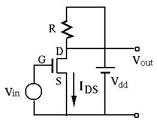
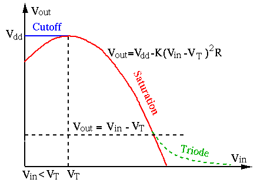
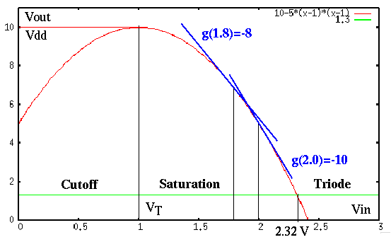
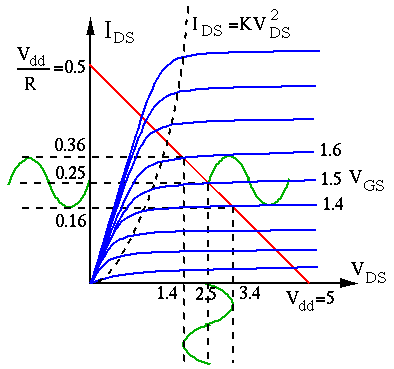
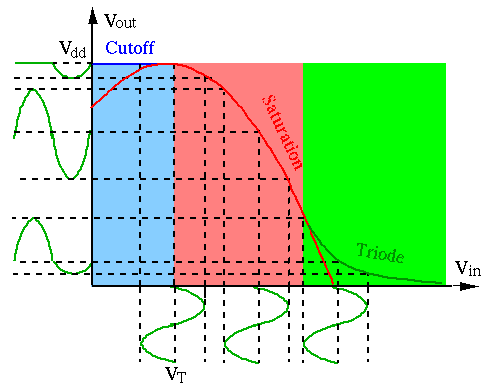
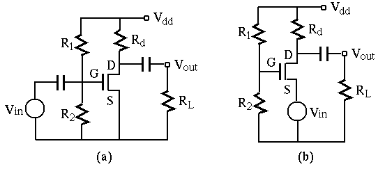
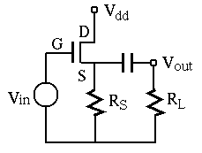
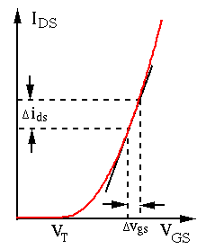

Next: CMOS Digital Logic Circuits Up: ch4 Previous: Metal-Oxide-Semiconductor Field-Effect Transistors
 
Assume in the circuit above and the transistor is in saturation region, i.e., , then we have
| (156) |
 to the input
to the input  , as
shown by the red segment of the curve in the plot above. As the transistor is
in saturation region,
, as
shown by the red segment of the curve in the plot above. As the transistor is
in saturation region,
| (157) |
| i.e. | (158) |
needs to satisfy both
and the inequality above, i.e., it
needs to be in the following range:
| i.e. | (159) |
When the transistor is in saturation mode the slope of the curve (red)
indicates the ratio between input and output , the voltage
gain of the circuit:
 |
(160) |
Example: Assume , , , . For the transistor to be in saturation region, we need
| (161) |
:
| (162) |
|
0 | 1 | 1.4 | 1.5 | 1.8 | 1.9 | 2.0 | 2.1 | 2.2 | 2.3 | 2.32 | 2.35 | 2.4 | ||
|
10 | 10 | 9.2 | 8.8 | 6.8 | 6.0 | 5.0 | 4.0 | 2.8 | 1.6 | 1.3 | 0.9 | 0.0 |
increases from to , the output
decreases from to , with a gain
.
Also when the input increases from to , the output
decreases from to  , with a gain
.
, with a gain
.

In summary, we see that
.
. When
, the gain is greater than one.
 out of phase with the input voltage (),
as the slope of
is negative.
is more than one
out of phase with the input voltage (),
as the slope of
is negative.
is more than one  below , for example,
,
, the transistor is in triode
region. In either of the two cases, the transistor has no amplification capability.
below , for example,
,
, the transistor is in triode
region. In either of the two cases, the transistor has no amplification capability.
Next we consider a MOSFET circuit with sinusoidal input. Assume the drain resistor is , , , and a sinusoidal input . If the bias voltage is , the input voltage varies between 1.4V and 1.6V. The output voltage can be found to be:
| (163) |
 and the current are, respectively,
,
and
, as shown in the figure below:
and the current are, respectively,
,
and
, as shown in the figure below:

Biasing: In the example above, the DC offset of the input is at 1.5V, so that the transistor is working in the saturation region when the magnitude of the AC input is limited. However, if this offset is either too high or too low, the gate voltage may go beyond the saturation region to enter either the triode or the cutoff region. In either case, the output voltage will be severely distorted, as shown below:

It is therefore clear that the DC offset or biasing gate voltage has to be properly setup to make sure the dynamic range of the input signal is within the saturation region.
Method 1: One way to provide the desired DC offset is to use two resistors
 and
and  that form a voltage divider, as shown in the figure below (a). As
the input resistance of a MOSFET transistor is very high, therefore the gate of
the transistor does not draw any current, the DC offset voltage can simply obtained
as:
that form a voltage divider, as shown in the figure below (a). As
the input resistance of a MOSFET transistor is very high, therefore the gate of
the transistor does not draw any current, the DC offset voltage can simply obtained
as:
| (164) |

Method 2: Another way to set up the bias is the circuit shown in (b) above. Assume , , , , and . The bias voltage can be found to be , and the voltage between gate and source is . The output voltage is
| (165) |
To determine the dynamic range of the input , recall the conditions for the
transistor to be in saturation region:
| (166) |
| (167) |
| (168) |
 |
(169) |
we get
, with corresponding output
| (170) |
| (171) |
Source Follower: If the output is taken from the source, instead of the drain of the transistor, the circuit is called a source follower.

Assume
 , and
. To find the input and output
voltages and the gain of the circuit, consider the current
:
, and
. To find the input and output
voltages and the gain of the circuit, consider the current
:
| (172) |
 |
(173) |
| (174) |
| (175) |
| (176) |
| (177) |
To maximize the dynamic range for the input AC signal, the DC operation point in terms of the DC variables needs to be set around the middle point of the saturation region. If the AC signal around the DC operation point is small enough, the behavior of the circuit can be linearized (first term of Taylor expansion of the nonlinear relationship) to simplify the analysis.

Specifically, the nonlinear relationship between and  can
be linearized around the DC operation point for small changes:
can
be linearized around the DC operation point for small changes:
| (178) |
and the small change in .